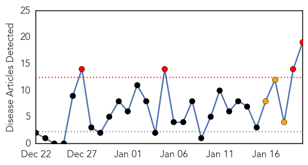

Dengue Fever
30-Day Web Trend
0 alerts, 0 warnings

30-Day Twitter Trend
2 alerts, 0 warnings

Article Locations

Article Confidences

Top Articles:
Top Tweets:
- 0.734
- Flavivirus news: Dengue fever outbreak spreads in Cairns - Brisbane Times: Dengue fever outbrea... http://t.co/pl2inAMXks pathogenposse
- 0.734
- Flavivirus news: Dengue fever outbreak spreads in Cairns - Brisbane Times: Dengue fever outbrea... http://t.co/MZXtAP3UL0 pathogenposse
- 0.568
- Flavivirus news: A very personal perspective on Dengue fever - Medical Xpress: Medical XpressA ... http://t.co/sEhXzM2d5R pathogenposse
Swine Flu
30-Day Web Trend
4 alerts, 3 warnings

30-Day Twitter Trend
0 alerts, 0 warnings

Article Locations

Article Confidences

Top Articles:
- 1.000
- Swine flu cases on rise
- 1.000
- 169 swine flu patients in Telangana; 7 deaths this year
- 0.999
- Flu shots advisable for high-risk group: expert
- 0.999
- Swine flu hits Telangana hard
- 0.999
- 169 Swine Flu Patients in Telangana; 7 Deaths This Year
- 0.999
- 27 Test Positive for Swine Flu in Telangana
- 0.999
- Swine flu spreads, Hyderabad girl dies of disease
- 0.997
- Indiablooms - First Portal on Digital News Management
- 0.996
- Gurgaon reports third death due to swine flu this year
- 0.996
- 25 new cases of swine flu reported in Hyderabad
- 0.994
- Telangana Chief Secretary checks swine flu status in Hyderabad
- 0.990
- TN reports first H1N1 death, govt says no need for panic
- 0.985
- Model predicts public response to disease outbreaks
- 0.983
- Swine Flu Kills 3 More, Infects 50 in a Day!
- 0.973
- Swine flu: police may suspend drunk-driving check
- 0.963
- Two succumb to swine flu as death toll touches 9 in Andhra Pradesh
- 0.961
- Seven deaths, 173 swine flu cases reported from Andhra Pradesh and Telangana, Video Gallery
- 0.949
- Seven deaths, 173 swine flu cases reported from Andhra Pradesh and Telangana
- 0.740
- H1N1 Strikes its 1st Fatal Blow in City, Takes Away Rail Staffer
Top Tweets:
-
No tweets found for Jan 20, 2015